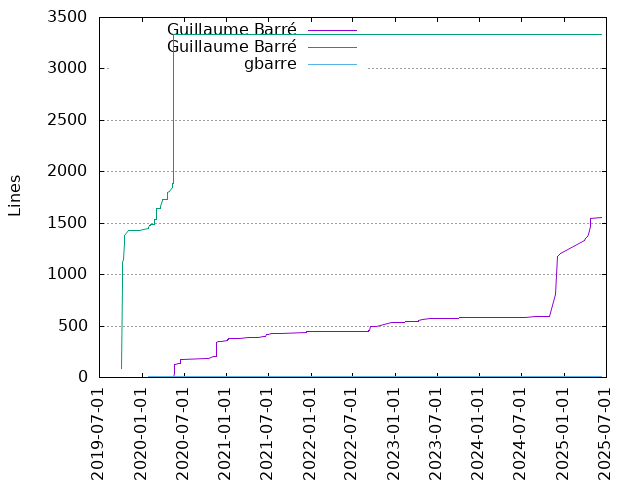

Authors
| Author | Commits (%) | + lines | - lines | First commit | Last commit | Age | Active days | # by commits |
|---|
| Guillaume Barré | 79 (56.03%) | 546 | 290 | 2020-05-22 | 2023-03-15 | 1026 days, 21:58:36 | 52 | 1 |
| Guillaume Barré | 61 (43.26%) | 3334 | 413 | 2019-10-04 | 2020-10-15 | 377 days, 6:05:12 | 31 | 2 |
| gbarre | 1 (0.71%) | 9 | 9 | 2020-01-29 | 2020-01-29 | 0:00:00 | 1 | 3 |


| Month | Author | Commits (%) | Next top 5 | Number of authors |
|---|
| 2023-03 | Guillaume Barré | 1 (100.00% of 1) | | 1 |
| 2023-02 | Guillaume Barré | 5 (100.00% of 5) | | 1 |
| 2023-01 | Guillaume Barré | 2 (100.00% of 2) | | 1 |
| 2022-12 | Guillaume Barré | 1 (100.00% of 1) | | 1 |
| 2022-10 | Guillaume Barré | 1 (100.00% of 1) | | 1 |
| 2022-09 | Guillaume Barré | 5 (100.00% of 5) | | 1 |
| 2022-06 | Guillaume Barré | 1 (100.00% of 1) | | 1 |
| 2022-02 | Guillaume Barré | 2 (100.00% of 2) | | 1 |
| 2022-01 | Guillaume Barré | 1 (100.00% of 1) | | 1 |
| 2021-12 | Guillaume Barré | 5 (100.00% of 5) | | 1 |
| 2021-08 | Guillaume Barré | 2 (100.00% of 2) | | 1 |
| 2021-07 | Guillaume Barré | 4 (100.00% of 4) | | 1 |
| 2021-06 | Guillaume Barré | 5 (100.00% of 5) | | 1 |
| 2021-05 | Guillaume Barré | 5 (100.00% of 5) | | 1 |
| 2021-04 | Guillaume Barré | 2 (100.00% of 2) | | 1 |
| 2021-02 | Guillaume Barré | 4 (100.00% of 4) | | 1 |
| 2021-01 | Guillaume Barré | 8 (100.00% of 8) | | 1 |
| 2020-12 | Guillaume Barré | 3 (100.00% of 3) | | 1 |
| 2020-11 | Guillaume Barré | 9 (100.00% of 9) | | 1 |
| 2020-10 | Guillaume Barré | 2 (66.67% of 3) | Guillaume Barré | 2 |
| 2020-06 | Guillaume Barré | 5 (100.00% of 5) | | 1 |
| 2020-05 | Guillaume Barré | 10 (58.82% of 17) | Guillaume Barré | 2 |
| 2020-04 | Guillaume Barré | 7 (100.00% of 7) | | 1 |
| 2020-03 | Guillaume Barré | 10 (100.00% of 10) | | 1 |
| 2020-02 | Guillaume Barré | 9 (100.00% of 9) | | 1 |
| 2020-01 | Guillaume Barré | 3 (75.00% of 4) | gbarre | 2 |
| 2019-12 | Guillaume Barré | 1 (100.00% of 1) | | 1 |
| 2019-11 | Guillaume Barré | 3 (100.00% of 3) | | 1 |
| 2019-10 | Guillaume Barré | 16 (100.00% of 16) | | 1 |
| Year | Author | Commits (%) | Next top 5 | Number of authors |
|---|
| 2023 | Guillaume Barré | 8 (100.00% of 8) | | 1 |
| 2022 | Guillaume Barré | 11 (100.00% of 11) | | 1 |
| 2021 | Guillaume Barré | 35 (100.00% of 35) | | 1 |
| 2020 | Guillaume Barré | 41 (61.19% of 67) | Guillaume Barré, gbarre | 3 |
| 2019 | Guillaume Barré | 20 (100.00% of 20) | | 1 |
| Domains | Total (%) |
|---|
| ac-versailles.fr | 140 (99.29%) |
|---|
| jrmv.net | 1 (0.71%) |
|---|